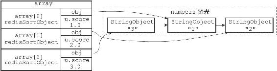
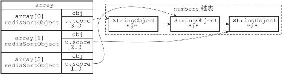

21.3 ASC选项和DESC选项的实现
在默认情况下，SORT命令执行升序排序，排序后的结果按值的大小从小到大排列，以下两个命令是完全等价的：
SORT
SORTASC
相反地，在执行SORT命令时使用DESC选项，可以让命令执行降序排序，让排序后的结果按值的大小从大到小排列：
SORT
DESC
以下是两个对numbers列表进行升序排序的例子，第一个命令根据默认设置，对numbers列表进行升序排序，而第二个命令则通过显式地使用ASC选项，对numbers列表进行升序排序，两个命令产生的结果完全一样：
redis> RPUSH numbers 3 1 2
(integer) 3
redis> SORT numbers
1) "1"
2) "2"
3) "3"
redis> SORT numbers ASC
1) "1"
2) "2"
3) "3"
与升序排序相反，以下是一个对numbers列表进行降序排序的例子：
redis> SORT numbers DESC
1) "3"
2) "2"
3) "1"
升序排序和降序排序都由相同的快速排序算法执行，它们之间的不同之处在于：
·在执行升序排序时，排序算法使用的对比函数产生升序对比结果。
·而在执行降序排序时，排序算法所使用的对比函数产生降序对比结果。
因为升序对比和降序对比的结果正好相反，所以它们会产生元素排列方式正好相反的两种排序结果。以numbers列表为例：
·图21-7展示了SORT命令在对numbers列表执行升序排序时所创建的数组。
·图21-8展示了SORT命令在对numbers列表执行降序排序时所创建的数组。

图21-7 执行升序排序的数组

图21-8 执行降序排序的数组
其他SORT